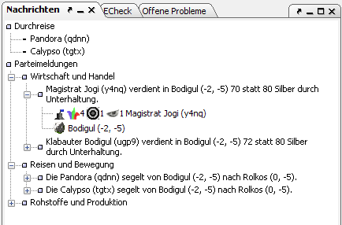

Messages are shown here.

Messages are shown here depending on the context. If a unit is selected, this window shows messages that relate to this unit (transactions, errors, messages to this unit, effects). If your faction is selected, all messages in the whole report are displayed. For a selected region this window shows the region messages (effects, silver received, unit that traveled through the region). For a selected building or ship the effects, if any, are shown.
With every message the corresponding units can be shown, and by doubleclicking you can jump to these units.